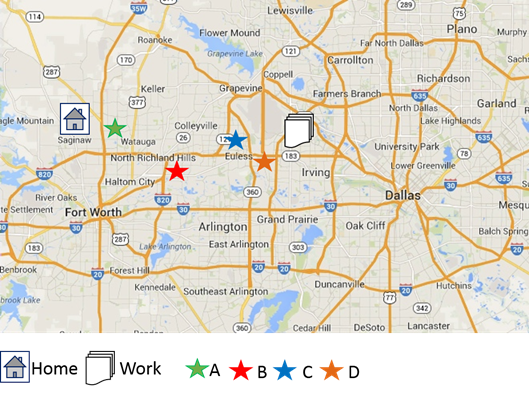

INTRODUCTION
When choosing a bank, you must consider both how often you will go to the bank and the amount of time you are willing to spend driving to and from the nearest branch. A branch close to your home or job is more beneficial than a branch farther away or where traffic may prevent you from getting there quickly. The reason this should be important to you is that in case that you need to deposit money to cover an overdraft, sign a stop-payment form, or close an account due to fraud, you will be able to do so as quickly as possible, preventing you from potentially losing money.
You should also consider how their hours of operation work with your schedule. If a branch is near your home but closes before you arrive home from work, you may want to find a bank closer to work or with longer operating hours.
Question

You work every day from 8am to 5pm and only take a 30-minute lunch. Your job is 45 minutes from your home. Based on the principles outlined in Chapter 1, which bank location best suits your schedule?In addition to finding a bank near you, you will need to consider how many branches exist around your area and across the country. Typically, this translates to deciding between a small, local bank or a larger, more corporate organization. Each comes with its own pros and cons.
Local banks, such as Woodhaven National or Southwest Bank, typically have fewer branches and are centrally located around a main operations branch. For example, Woodhaven has eight branches spread across the DFW Metroplex. Local banks often offer slightly lower interest rates, but can more closely monitor your accounts for possible fraud. Many small banks avoid "selling" to their customers (i.e., pushing new accounts to new and existing customers to satisfy quotas).
Larger corporate banks, such as Bank of America or Wells Fargo, will have branches located all across the country and even in foreign countries. Having so many branches available is helpful if issues arise while on vacation or traveling. The downsides of the larger banks are that the experience you receive will be less personalized to your needs and you may not be able to speak to an employee without going to a branch. Many of the bigger branches use automated phone-based customer support.
Question
What is NOT a major consideration when opening a new bank account?Question
Opening an account at a small local bank can be beneficial because:Question
Bigger nationally branded banks are beneficial because:Next, you will want to consider the amount of money required to open an account as well as the minimum balance needed to avoid fees and service charges. The amount of money you currently have and the amount of money tied up by these balance requirements may determine whether or not you choose a particular account. Ideally, you want one with either no minimum or a very low minimum, such as $25 or $50.
Typically related directly to the minimum balance requirements, monthly fees and service fees are calculated and charged differently at each bank.
One way of assessing the imposition of fees is to calculate the total daily balance for each statement cycle. If the daily balance falls below a predetermined amount on any given day in a statement cycle, the bank adds a fee to that month's statement. The fee can vary by bank, as well as by the severity of the difference in your daily balance versus the predetermined minimum. For example, say Bank A imposes a minimum daily balance requirement of $1,000. The bank charges an account in which the balance falls below $500 on any given day of the statement cycle a fee of $8. However, if an account's balance only falls between $500 and $750, Bank A reduces the fee to $5 for that statement cycle.
Other banks may charge a flat fee on all accounts of a certain type, but may allow customers incentives to reduce that fee by completing certain actions. For example, say Bank B charges a monthly flat fee of $7 on all "Select 4 Checking" accounts. Customers can sign up for online banking to reduce the fee by $2 and set up direct deposit to lower the fee another $2. Thus, the customer could reduce the fee to as little as $3 per month.
Additional service fees may come from having cashier's checks or money orders printed, wiring funds to another bank, or replacing lost ATM cards. These fees also vary by bank, so it is important to research such conditions before signing up for an account.
Question
Additional service fees may come from having cashier's checks or money orders printed, wiring funds to another bank, or replacing lost ATM cards. These fees also vary by bank, so it is important to research such conditions before signing up for an account.Question
No matter where you bank, cashier's checks and money orders are always free because you pay for them with cash.